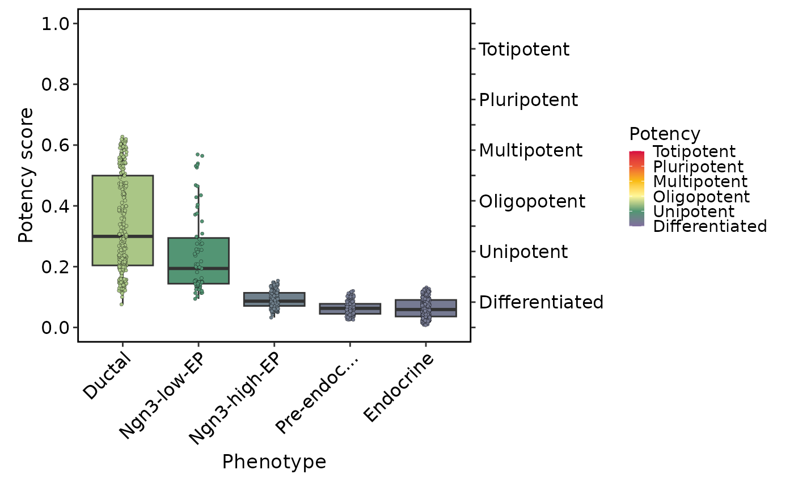

Plot CytoTRACE 2 Results
Usage
CytoTRACEPlot(
srt,
reduction = NULL,
group.by = NULL,
combine = TRUE,
nrow = NULL,
ncol = NULL,
byrow = TRUE,
pt.size = NULL,
pt.alpha = 1,
palette = "Chinese",
palcolor = NULL,
theme_use = "theme_scop",
theme_args = list(),
verbose = TRUE,
...
)Arguments
- srt
A
Seuratobject.- reduction
Reduction to plot.
NULLuses DefaultReduction.- group.by
Metadata column(s) used to color cells.
- combine, nrow, ncol, byrow
Combine plots with patchwork.
combine = FALSEreturns a list of ggplots.- pt.size, pt.alpha
Point size and transparency.
pt.size = NULLscales withsqrt(n)(minimum0.3). Rasterized points keep at least a two-pixel radius atraster.dpi = c(512, 512)and scale withraster.dpi.- palette, palcolor
Palette name (thisplot::show_palettes) or custom colors.
- theme_use, theme_args
Theme name or function, plus extra theme arguments.
- verbose
Whether to print the message. Default is
TRUE.- ...
Passed to CellDimPlot and FeatureDimPlot.
Value
If combine = TRUE, returns a patchwork object combining all plots.
If combine = FALSE, returns a named list of ggplot objects:
Score: UMAP plot colored by score computed by CytoTRACE2;Potency: UMAP plot colored by potency category computed by CytoTRACE2;Relative: UMAP plot colored by relative score computed by CytoTRACE2;Phenotype: UMAP plot colored by phenotype (ifgroup.byis provided);Boxplot: Boxplot of score computed by CytoTRACE2 corresponding to phenotype (ifgroup.byis provided).
Examples
data(pancreas_sub)
pancreas_sub <- RunStandardWorkflow(pancreas_sub)
#> ℹ [2026-09-05 15:47:02] Start standard processing workflow...
#> ℹ [2026-09-05 15:47:02] Checking a list of <Seurat>...
#> ! [2026-09-05 15:47:02] Data 1/1 of the `srt_list` is "unknown"
#> ℹ [2026-09-05 15:47:02] Perform `NormalizeData()` with `normalization.method = 'LogNormalize'` on 1/1 of `srt_list`...
#> ℹ [2026-09-05 15:47:02] Perform `FindVariableFeatures()` on 1/1 of `srt_list`...
#> ℹ [2026-09-05 15:47:02] Use the separate HVF from `srt_list`
#> ℹ [2026-09-05 15:47:02] Number of available HVF: 2000
#> ℹ [2026-09-05 15:47:02] Finished check
#> ℹ [2026-09-05 15:47:02] Perform `ScaleData()`
#> ℹ [2026-09-05 15:47:03] Perform pca linear dimension reduction
#> ℹ [2026-09-05 15:47:03] Use stored estimated dimensions 1:23 for Standardpca
#> ℹ [2026-09-05 15:47:03] Perform `Seurat::FindClusters()` with `cluster_algorithm = 'louvain'` and `cluster_resolution = 0.6`
#> ℹ [2026-09-05 15:47:03] Reorder clusters...
#> ℹ [2026-09-05 15:47:03] Skip `log1p()` because `layer = data` is not "counts"
#> ℹ [2026-09-05 15:47:03] Perform umap nonlinear dimension reduction
#> ✔ [2026-09-05 15:47:12] Standard processing workflow completed
pancreas_sub <- RunCytoTRACE(
pancreas_sub,
species = "Mus_musculus",
backend = "cpp"
)
#> ◌ [2026-09-05 15:47:12] Running CytoTRACE2
#> ℹ [2026-09-05 15:47:12] Extracting expression matrix from `assay = RNA, layer = counts`
#> ◌ [2026-09-05 15:47:12] Running CytoTRACE2 with `backend = cpp`
#> ℹ [2026-09-05 15:47:13] Preparing CytoTRACE2 database
#> ℹ [2026-09-05 15:47:13] Downloading CytoTRACE2 model data from datasets GitHub repository...
#> ℹ [2026-09-05 15:47:13] Downloading model_parameters.rds ...
#> ℹ [2026-09-05 15:47:14] Downloading features_model_training_17.csv ...
#> ℹ [2026-09-05 15:47:14] Downloading mt_dict_human_to_mouse.csv ...
#> ℹ [2026-09-05 15:47:14] Downloading mt_human_alias.csv ...
#> ℹ [2026-09-05 15:47:14] Downloading mt_mouse_alias.csv ...
#> ✔ [2026-09-05 15:47:14] CytoTRACE2 data cached at /home/runner/.local/share/R/scop/CytoTRACE2
#> ℹ [2026-09-05 15:47:14] Species: "Homo_sapiens"
#> ℹ [2026-09-05 15:47:14] Species: "Mus_musculus"
#> ℹ [2026-09-05 15:47:14] Loading model from /home/runner/.local/share/R/scop/CytoTRACE2
#> ℹ [2026-09-05 15:47:18] Dataset contains 15998 genes and 1000 cells.
#> ℹ [2026-09-05 15:47:18] Running on 1 subsample
#> ℹ [2026-09-05 15:47:18] Using 1 core
#> ℹ [2026-09-05 15:47:18] 12486 input genes mapped to model genes.
#> ℹ [2026-09-05 15:47:18] Building results
#> ✔ [2026-09-05 15:47:56] CytoTRACE2 computed successfully
CytoTRACEPlot(
pancreas_sub,
group.by = "CellType",
xlab = "UMAP_1",
ylab = "UMAP_2"
)
 plots <- CytoTRACEPlot(
pancreas_sub,
group.by = "CellType",
combine = FALSE
)
plots$Boxplot
plots <- CytoTRACEPlot(
pancreas_sub,
group.by = "CellType",
combine = FALSE
)
plots$Boxplot
